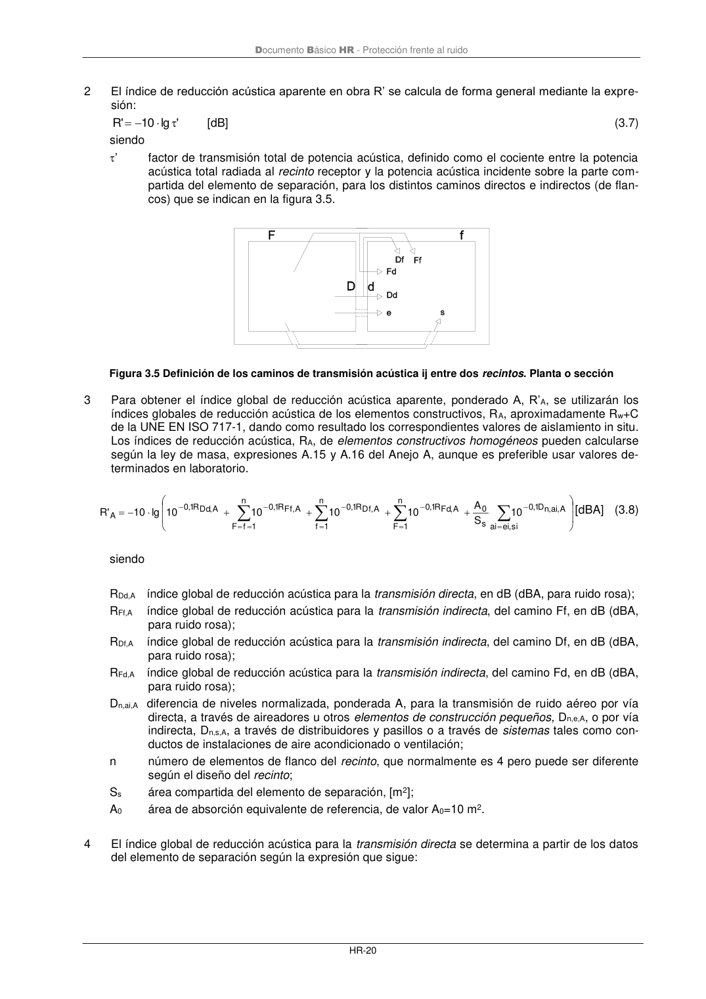

DB-HR Protección frente al ruido · edición 2019-12-20 · capa oficial
Documento DB-HR-oficial · SHA-256 del PDF a67baeca5138bb1f121f797d23a79a4557bd9ac4abacd954024893e05411eeab
Copia fiel del PDF fuente · Fuente oficial
Ficha de la disposición en la fuente oficial
Formatos: JSON del segmento · Markdown
3.1.3.3 Método de cálculo de aislamiento acústico a ruido aéreo entre recintos interiores 1 La diferencia de niveles estandarizada, ponderada A, DnT,A, utilizada para recintosinteriores se cal- cula mediante la expresión: + = s A A , nT S V 32 ,0 lg 10 ' R D [dBA] (3.6) siendo V volumen del recinto receptor, [m3]; Ss área compartida del elemento de separación, [m2], R’A índice global de reducción acústica aparente, ponderado A, [dBA]. Documento Básico HR - Protección frente al ruido HR-20 2 El índice de reducción acústica aparente en obra R’ se calcula de forma general mediante la expre- sión: ' lg 10 ' R − = [dB] (3.7) siendo ’ factor de transmisión total de potencia acústica, definido como el cociente entre la potencia acústica total radiada al recinto receptor y la potencia acústica incidente sobre la parte com- partida del elemento de separación, para los distintos caminos directos e indirectos (de flan- cos) que se indican en la figura 3.5. Figura 3.5 Definición de los caminos de transmisión acústica ij entre dos recintos. Planta o sección 3 Para obtener el índice global de reducción acústica aparente, ponderado A, R’A, se utilizarán los índices globales de reducción acústica de los elementos constructivos, RA, aproximadamente Rw+C de la UNE EN ISO 717-1, dando como resultado los correspondientes valores de aislamiento in situ. Los índices de reducción acústica, RA, de elementos constructivos homogéneos pueden calcularse según la ley de masa, expresiones A.15 y A.16 del Anejo A, aunque es preferible usar valores de- terminados en laboratorio. + + + + − =
